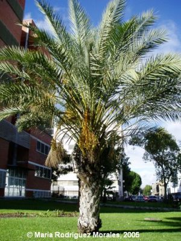
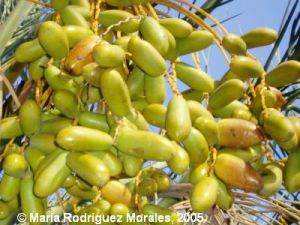

Flora ornamental del Campus de Reina Mercedes, Universidad de Sevilla - Ficha nº 47 - Versión 1*
|
Phoenix
dactylifera L., Sp. Pl. 1188
(1753) |
|
|
Palmera datilera |
Palmera |
|
Palmera dioica de 7,7 metros de altura y 205 cm de cuerda [suele alcanza hasta unos 25 ó 30 m, llegando algunos ejemplares a los 50 m(1)]. Hojas de 6-7 m, pecioladas, dispuestas formando una corona apical, pinnatisectas; pecíolo muy robusto, con la base ancha y persistente; segmentos numerosos, de unos 45 cm, los inferiores transformados en espinas de c. 10 cm, de color verde grisáceo. Inflorescencia de tipo espádice. Flores masculinas de color crema, las femeninas amarillas. Frutos de tipo baya (dátil), de 3-9 cm, oblongo-ovoides, de color amarillo dorado, monospermos, con pulpa carnosa y dulce. |
 |
|
 |
Observaciones: Phoenix era el nombre griego de la palmera datilera. Dactylifera es porque produce dátiles. Sus frutos comestibles son muy populares. Las palmeras datileras fueron introducidas en la Península por los árabes, quienes por tradición aprecian mucho sus frutos. Las palmeras desaparecieron del continente europeo durante las glaciaciones, salvo el palmito (Chamaerops humilis) que sobrevivió en refugios cálidos del Sur. |
|
Área de origen.- Norte de África y
oeste de Asia. |
|
|
Uso en el campus.- Un único ejemplar femenino, con las hojas marchitas podadas al estilo "sahariano", que permite trepar para recoger los dátiles. |
Localización: Zona
Central del Campus: |
|
(1) J.A.
del Cañizo |
|
|
©
Julián Mier Mota |
|
*P.D.: el único
ejemplar que crecía en el Campus (el de la foto) fue talado
para evitar peligro de caída, ya que su base estaba erosionada
por podredumbre debida al intenso riego del césped donde
estaba. CRZ, 27/12/2015.